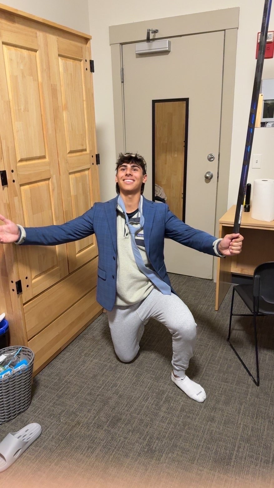
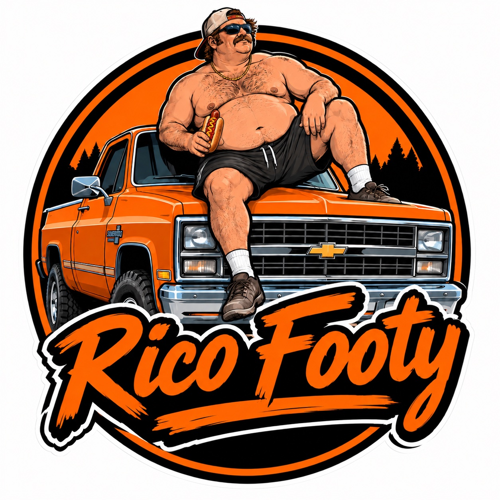

Exceptional Status Signing
Christian LoPiano
Younger than most in the league — locked in early and a year younger.
Welcome to Rico Footy


Exceptional Status Signing
Younger than most in the league — locked in early and a year younger.
Welcome to Rico Footy